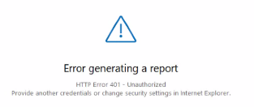

Symptoms
-
Symptom 1. You tried to run an Auditor report and got the following error:
An error occurred while enrolling for a certificate, the certificate request could not be submitted to the certificate authority. RPC server is unavailable.
-
Symptom 2. Unauthorized error while accessing a report.

Causes
Here are the possible causes for the issue:
-
For symptom 1. Microsoft lists multiple causes of this error, please use the link to the Microsoft troubleshooting article below for the full list of possible causes and resolution steps.
-
For symptom 2. Unauthorized error occurs if the account used to run Netwrix Auditor does not belong to a trusted domain.
Resolutions
Here are possible options to resolve the issue:
-
For the symptom 1, learn more about the error causes and possible resolution steps in Error 0x800706ba "The RPC Server is unavailable" when you enroll a certificate ⸱ Microsoft 🡥
-
For the symptom 2, do the following:
-
Check how many domains you have.
-
Check that the account used for data collection is on the same domain as the Netwrix Auditor Server or another domain.
-
Check if those domains are trusted. If not, add the Netwrix Site to the trusted list.